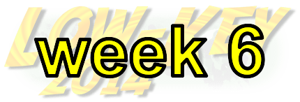
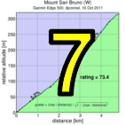
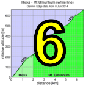

|
 |  |
RSVP for today's climb after the previous week's climb!
| results? | right here! |
| profile |  |
| distance | 4.11 miles (6.6 km) |
| climbing | 2158 ft (657 meters) |
| grade | 9.99% |
| where? | see below |
| when? | 08 Nov 2014 |
| what time | check-in 9:00 to 10:00 climb starts @ 10:10 |
| RSVP | check back later! |
| waiver | Please fill one out before the climb! |
| how? |  |
| how much? | $10 (free for juniors and those with volunteer credit) |
| why? | Ask not why; just do! |
| coordinator | |
| volunteers | sign up! |
| aerial view | Stanford Cycling |
| weather | Bay area winds |
| links | Strava(Hicks) Strava(Umunhum Rd) Steepest Ascent blog |
| deja-vu? | 2010(8) 1996(8) |
| route map | |
Sorry, folks! Our insurance requires all riders wear helmets during the climb, and we follow the USA Cycling rule against ear buds or other head phones. Rock to tunes before the climb, perhaps, but we need riders to pay attention to what's happening during the climb...
Low-Key returns to Umunhum! Make sure to check back here for registration information. After registration we will ride together to the bridge where the climbing and timing begins!
For LKHC Week 6, Hicks - Mt. Umunhum, the registration will be at Venture Christian Church (map). We'll use the closest lot to Mt. Umunhum, off HIcks. They'll be a soccer game going, but we can use the two fieldhouse bathrooms. There's also bathrooms off the patio up the stairs towards the church entrance. The idea will be for cars to enter through the lot, and bikes to exit to Hicks from the Registration lot. — at Venture Christian Church.
For those driving (blue line), most will take Hwy 85, and then Camden Ave to Hicks Rd. Drive past the first entrance, and enter past the Church. Go through the school lot to the distal lot. There we will have registration. Bikes will exit the lot down the hill to Hicks for the ride to staging. — at Venture Christian Church.
We will ride as a group from Registration at Venture to staging, at the second bridge on Hicks just before it climbs. We will group up, fastest first, about 20 yards from the climb start.
The climb itself: after climbing Hicks we make a right turn on the top of Hicks onto Mt Umunhum Road (Loma Almaden). This we follow up to and through the gate, then on from there to the infamous White Line of Death. Beyond the line? Any who have ventured forth and returned are likely too scarred to tell the tail. In any case, nobody will be doing so today because we are Low-Key and as Low-Key we want to be gracious guests of those who live on the roads we enjoy.
The finish is here. Note we'll turn around and descend back to the point marked with a P, which is prior to the gate, for refreshments and celebration.
Volunteers make Low-Key tick! Without them, we no longer function. Please sign up for any week in the series using our volunteer form! Thanks!!!
Low-Key is all about a group of friends riding up a hill together. It's like any other informal group ride, except we time you to the top and report the results on our web site. But we have no road closures, no lead vehicle, no follow vehicle. We are traffic, sharing the roads with other traffic, following the laws and courtesy which applies to traffic. Think of it as a human-assisted Strava. We're each responsible for our own actions out there, on and off the bike, both as users of the road as as courteous visitors to the neighborhoods we pass through. "Ceci n'est pas un race".
{kind=link}